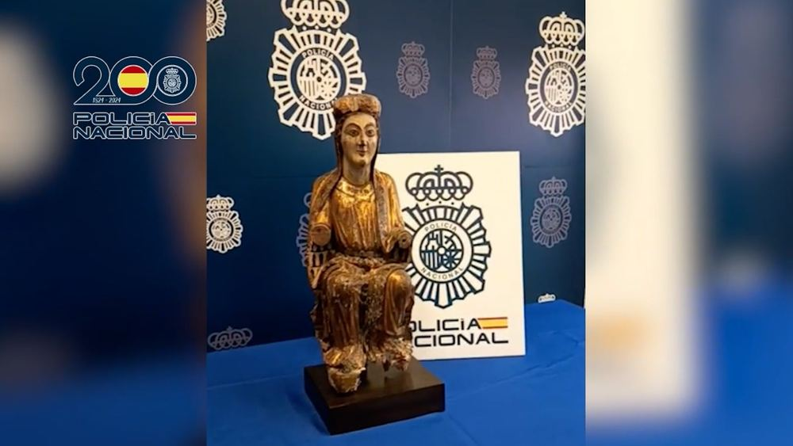

Recuperada una talla románica robada en 1979 por el célebre ladrón de arte Erik el Belga

La pieza, una virgen policromada del siglo XIII, ha sido localizada por la Policía Nacional en una colección del Reino Unido
Erik el Belga , uno de los mayores ladrones de arte de la historia de España, fallecido en 2020 y célebre por sus robos en iglesias de áreas poco pobladas, sustrajo en 1979 una talla del siglo XIII de la iglesia de San Pedro de Meoz, en Navarra. La Policía Nacional ha anunciado su recuperación: se trata de una virgen románica tallada en madera de nogal policromada que aún conserva parte del dorado y su policromía original.